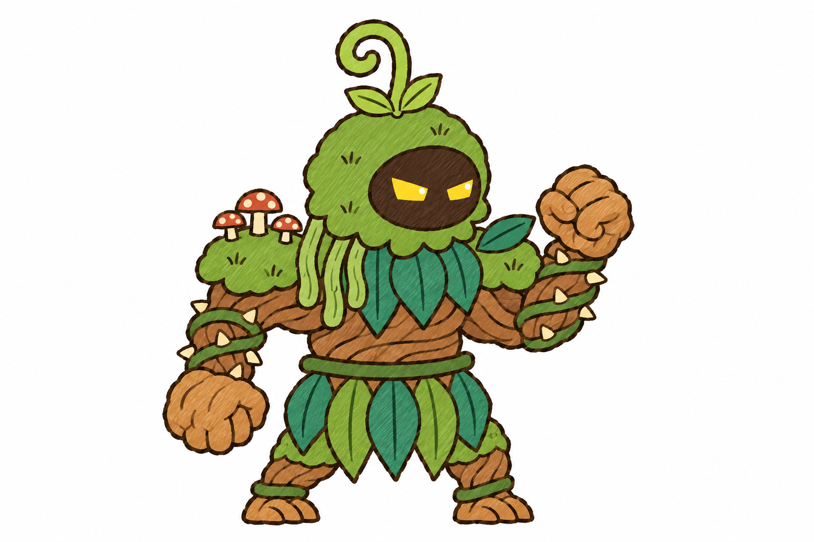
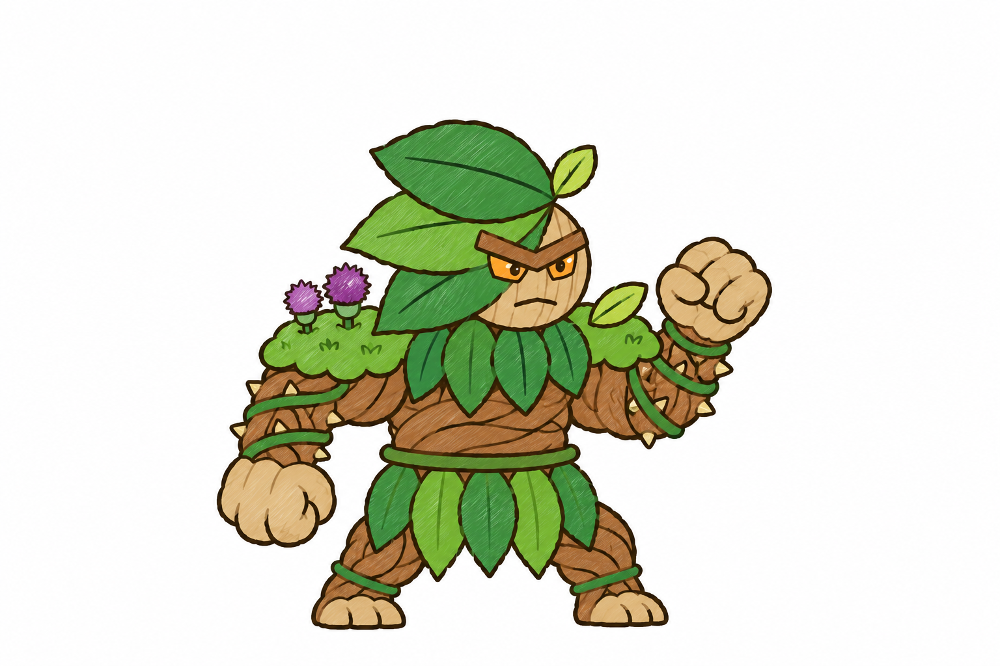

Tướng thứ 7 đảo Mộc: người cây (mã nguoi_cay)
Hai hướng concept do Claude đề xuất, cùng một dáng (thế thủ của rig gốc). Chọn một hướng hoặc dặn sửa; chưa tách lớp, chưa rig.

A · Người rêu đầm lầy
Mũ trùm rêu, hốc mặt tối chỉ có hai mắt vàng, chồi dương xỉ cuộn, rêu rủ sau gáy, nấm trên vai.

B · Người rễ mặt gỗ
Mặt nạ gỗ nhạt có gờ mày, mắt hổ phách, khe miệng; ba chiếc lá to làm mũ; hoa kế tím trên vai.